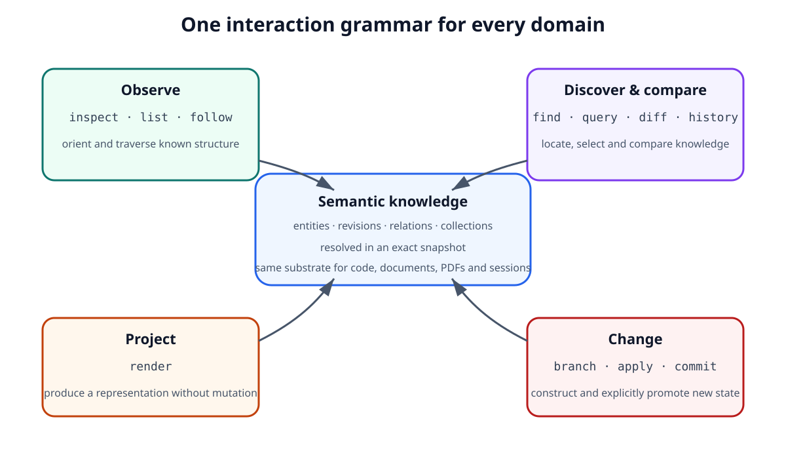
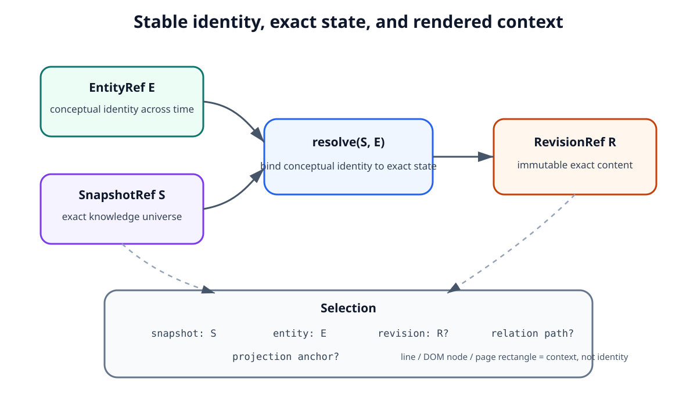
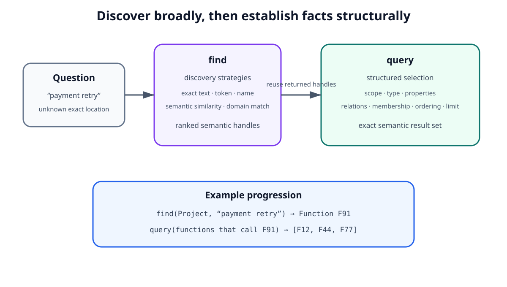
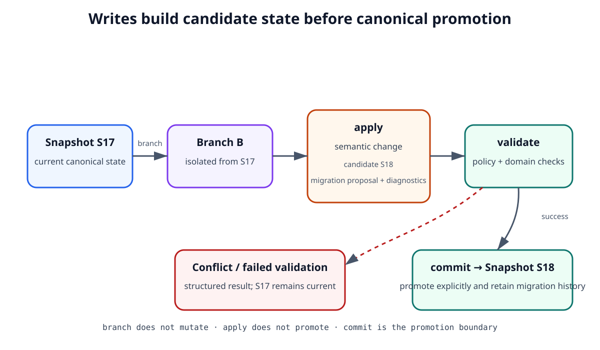
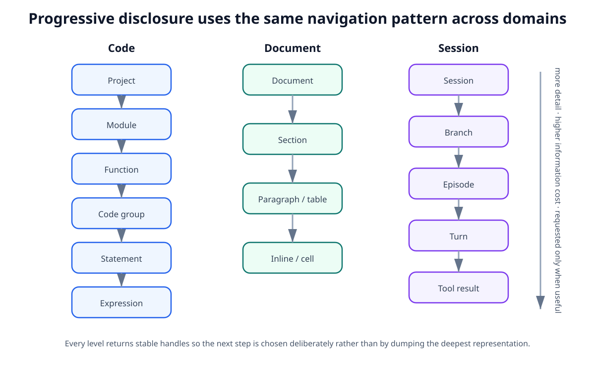
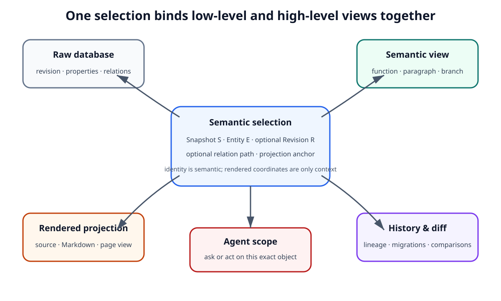
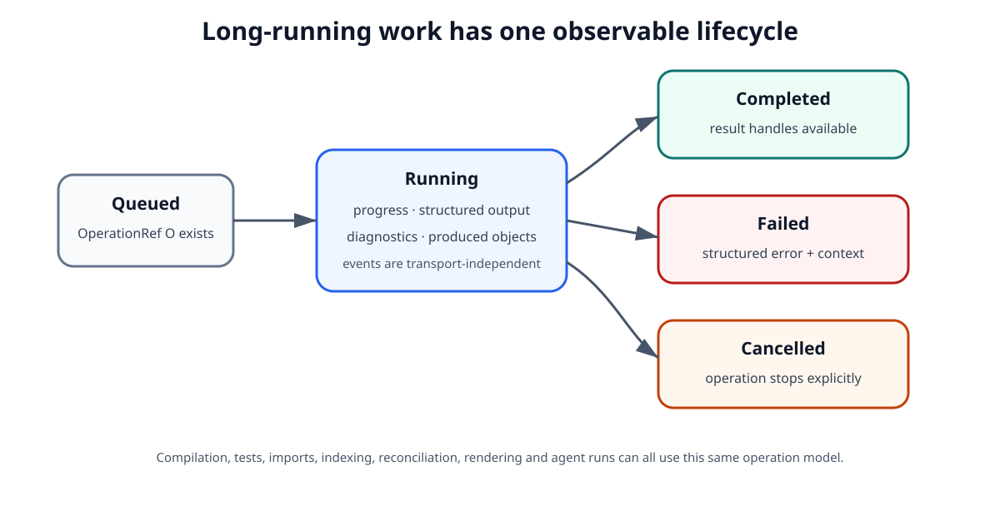
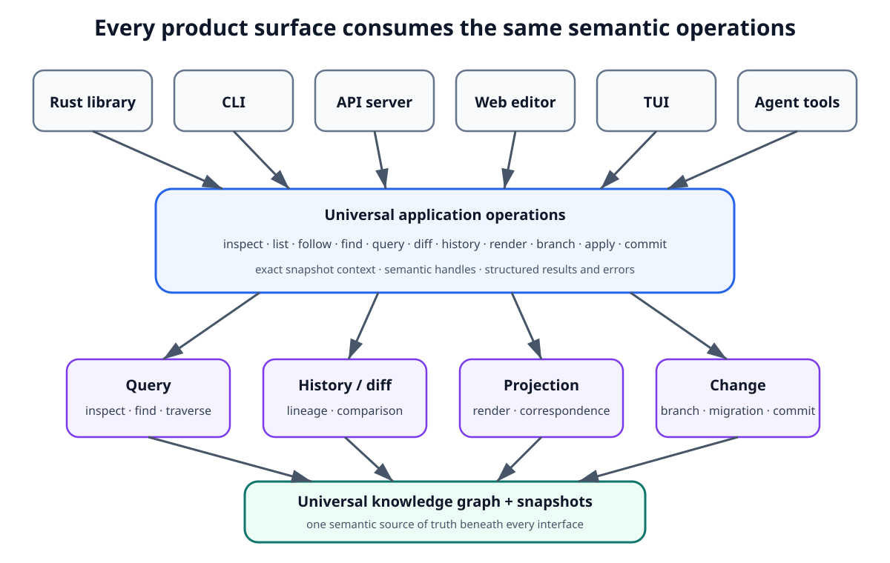

Universal Query and Operation Model¶
1. Purpose¶
Scriberig uses one universal typed knowledge model across source code, Markdown, PDFs, sessions, branches, decisions, migrations, styles, derived analysis, and future domains.
Consumers must therefore not need a separate interaction model for each domain.
A human interface, agent, CLI command, API client, TUI, web editor, or third-party application should be able to navigate and act on the same knowledge through one common grammar.
The central principle is:
The interaction model is universal; domains specialize meaning through types, relations, views, and higher-level operations rather than replacing the core grammar.
This document defines that common grammar.
It covers:
- stable handles;
- snapshot-bound reads;
- inspection;
- relation and collection traversal;
- discovery and querying;
- comparison and history;
- rendering;
- branching;
- applying changes;
- committing new state;
- progressive disclosure;
- result discoverability;
- domain extensions;
- operation lifecycle;
- the relationship between low-level and high-level actions.
Concrete Rust traits, query AST types, HTTP endpoints, CLI syntax, TypeScript APIs, database indexes, pagination encodings, and UI components belong in lower-level designs.
2. Design Goals¶
The universal interaction model must satisfy the following goals.
2.1 One grammar across domains¶
The same basic operations should work whether the target is:
- a project;
- a Rust module;
- a function;
- an AST expression;
- a Markdown section;
- a paragraph;
- a table row;
- a PDF page;
- a session;
- an agent branch;
- a project decision;
- a migration;
- a style;
- a derived result.
The details differ by type, but the user or agent should not need to learn a completely different navigation protocol for each one.
2.2 Semantic access before raw representation¶
Consumers should operate on semantic entities and relations when those exist.
A function should be addressed as a function, not primarily as a filename plus line range.
A paragraph should be addressed as a paragraph, not primarily as a byte span.
A session branch should be addressed as a branch, not primarily as a slice of transcript text.
Raw representations remain available through projections when necessary.
2.3 Progressive disclosure¶
A consumer should be able to discover structure before loading content.
For example, inspecting a function may reveal:
The consumer can then decide which relation or child collection to inspect.
The model should make the inexpensive representation useful enough to guide the next operation.
2.4 Stable references¶
Results must expose stable semantic handles that can be passed directly into later operations.
Consumers should not need to reconstruct a target from display text.
2.5 Exact read semantics¶
A read must be interpretable relative to an exact snapshot or exact immutable revision.
A consumer should always be able to answer:
Which state did this result describe?
2.6 Explicit change semantics¶
Write operations must not mutate canonical state invisibly.
They should operate through branches, workspaces, migration proposals, and commits so that:
- the base state is known;
- validation can run before promotion;
- concurrent edits remain explicit;
- failures do not corrupt the current root;
- history remains inspectable.
2.7 Useful without agents¶
The universal query and operation model is application infrastructure, not an agent-only API.
A database browser, compiler integration, IDE, CLI, web application, or custom service should use the same model.
2.8 Discoverability¶
A consumer should be able to inspect an object and discover:
- what it is;
- what relations it exposes;
- what collections it owns;
- which views are available;
- which operations apply;
- what deeper information can be requested.
This reduces dependence on hard-coded domain knowledge in clients.
3. The Universal Interaction Grammar¶
The core interaction grammar is intentionally small.
At Level 1 the important operations are:
These operations fall into four broad groups.
3.1 Observe¶
These reveal known structure.
3.2 Discover and compare¶
These locate, select, compare, and trace knowledge.
3.3 Project¶
This produces a representation for a human, model, external tool, or file.
3.4 Change¶
These create isolated candidate state and explicitly promote accepted changes.
Domain-specific capabilities may add richer operations such as:
Such operations extend the universal model.
They must not create a separate persistence or history path.
Conceptually, high-level domain operations eventually become changes expressed through the same branch, migration, validation, and commit machinery.
Figure 1 is the main mental model for the document: all four operation groups act on the same semantic knowledge substrate. Domains may add vocabulary, but they do not create parallel navigation, rendering, or mutation architectures.

Figure 1 — The universal interaction grammar groups all operations around one semantic knowledge substrate.
4. Universal Handles¶
The interaction model relies on references that preserve semantic identity.
The important handle classes are conceptually:
The exact wire representation belongs in lower-level designs.
5. Entity References¶
An EntityRef identifies a conceptual entity across time.
Examples:
An entity reference alone does not necessarily identify exact content.
It must be resolved in a snapshot when exact state matters.
Conceptually:
This is useful when a consumer wants:
the current state of this conceptual thing within this exact world state.
6. Revision References¶
A RevisionRef identifies one exact immutable state.
For example:
A revision reference remains meaningful even after the entity advances to a newer revision.
Historical observations, derived knowledge, diffs, validation results, and reproducible queries should prefer exact revision references when appropriate.
7. Snapshot References¶
A SnapshotRef identifies the exact canonical knowledge universe used for an operation.
A query against a snapshot must not silently drift to a newer state while being evaluated.
A consumer may begin with:
and receive results containing entities resolved within S17.
If the current project later advances to S18, the original result still describes S17.
This is essential for:
- reproducibility;
- agent reasoning;
- concurrent edits;
- semantic diff;
- three-way merge;
- debugging;
- validation;
- history inspection.
8. Selections and Anchors¶
User interfaces often need to identify not only an entity but a meaningful location within a representation.
For example:
- a paragraph shown in rendered Markdown;
- a function shown in source code;
- a table cell shown in a PDF view;
- a branch shown in a session tree.
A selection should resolve back to semantic handles.
Conceptually:
Selection
snapshot: S
entity: E
revision: optional exact revision
relation path: optional structural context
projection anchor: optional rendered location
Projection anchors are not canonical identity.
They are bridges between rendered representations and semantic objects.
A line number, byte range, DOM node, page rectangle, or editor selection may be useful as an anchor, but the system should prefer semantic identity once correspondence is known.
Figure 2 separates the three kinds of identity that must not be conflated: the conceptual entity, the exact snapshot in which it is resolved, and the immutable revision that contains exact content. A UI selection can additionally carry structural or rendered context without making that context part of identity.

Figure 2 — Entity identity, snapshot context, exact revision identity, and projection anchors play distinct roles.
9. Read Operations Are Snapshot-Bound¶
Every canonical read should be evaluated against an explicit or resolved snapshot.
Clients may omit the snapshot for convenience only if the system resolves a concrete snapshot before executing the operation and reports that snapshot in the result.
This avoids ambiguous behavior such as:
beginning under one project state and completing under another.
The architectural rule is:
Convenience may select a snapshot implicitly; execution and results must be tied to an exact snapshot explicitly.
For immutable RevisionRef inputs, the revision itself already provides exact state for that object, though surrounding graph traversal may still require a snapshot.
10. inspect¶
inspect answers:
What is this object, and what are the useful ways to continue exploring it?
It should usually be the first operation on an unfamiliar handle.
An inspection result may contain:
identity
type
short description
provenance
current revision
container counts
important properties
available relations
available collections
available views
available operations
information-size hints
For example:
Function F
name: process_payment
purpose: Validate an order and charge the payment provider.
parameters: 2
code groups: 7
outgoing calls: 4
relations:
parameters
body
calls
references
comments
views:
summary
groups
semantic body
source projection
For a PDF page:
For a session:
Session S
active branches: 1
completed branches: 14
open tasks: 3
current decisions: 8
relations:
branches
decisions
tasks
recent turns
inspect should emphasize orientation, not dump the entire object.
11. list¶
list enumerates an ordered or unordered collection associated with an object.
Examples:
list(Document, sections)
list(Section, paragraphs)
list(Function, code_groups)
list(Session, branches)
list(PDFPage, tables)
A listing should return compact entries suitable for navigation.
For example:
cg:1 validate request 4 statements
cg:2 load account 5 statements
cg:3 apply changes 8 statements
cg:4 persist account 3 statements
The list operation should support bounded results and continuation.
Consumers should not be forced to materialize a collection containing thousands of members merely to inspect the first few.
The exact pagination mechanism belongs in lower-level design.
12. follow¶
follow traverses a typed relation from one object to related objects.
Examples:
follow(Function F, calls)
follow(Symbol S, references)
follow(Decision D, supersedes)
follow(Migration M, produced_by)
follow(Paragraph P, derived_from)
The operation should preserve relation meaning rather than reduce every relationship to generic graph edges.
A domain schema may declare:
- relation cardinality;
- direction;
- ordering;
- expected target types;
- whether reverse traversal is indexed;
- whether the relation is canonical or derived.
Consumers should not need to know how relations are physically stored.
13. find¶
find is a discovery operation.
It answers questions such as:
Where does this text or concept occur in this scope?
Unlike raw text search, results should resolve to semantic objects whenever possible.
Example:
may return:
A code result might be:
A session result might be:
A table result might be:
The key rule is:
Search discovers semantic handles, not merely offsets in opaque text.
Text offsets may be included as projection anchors when useful.
find may support different strategies, including:
- exact text;
- token search;
- indexed terms;
- structured names;
- semantic similarity;
- domain-specific matching.
If ranking depends on derived indexes or model-generated embeddings, the result should preserve provenance and derivation information where relevant.
14. query¶
query performs structured selection over the knowledge graph.
It is more precise than find.
Examples include:
functions that call service X
decisions that concern object identity
branches that touched migration M
paragraphs contained in section S
entities changed between snapshots A and B
The query model should be declarative and serializable.
It should express concepts such as:
scope
type constraints
property predicates
relation traversal
collection membership
revision constraints
snapshot constraints
ordering
limits
The universal query model must not expose the physical database as its public abstraction.
For example, clients should not need to know SQL table names or storage-specific join structure.
This preserves freedom to change persistence while keeping the semantic API stable.
Domain adapters may contribute optimized predicates or query expansions without changing the universal query semantics.
15. find and query Serve Different Purposes¶
The distinction should remain clear.
find is primarily for discovery.
It may be ranked, approximate, text-oriented, or semantic.
query is primarily for structural selection.
It should be as deterministic as its declared inputs and derivations allow.
For example:
may help locate relevant objects.
Then:
produces an exact structural result.
Agents should often use find to orient themselves and query to establish facts.
Figure 3 shows the intended progression: find reduces uncertainty and returns semantic handles; those handles can then anchor a structured query that establishes a precise graph fact. The two operations are complementary rather than competing search syntaxes.

Figure 3 — find is for discovery; query is for precise structural selection using semantic handles.
16. diff¶
diff compares two exact states.
Inputs may include:
- two revisions of one entity;
- two snapshots;
- two branches;
- two projection results;
- two related semantic objects when a domain defines comparison semantics.
The preferred result is semantic.
For example:
FunctionDiff
signature:
unchanged
code group 2:
condition changed
error branch added
code groups 1 and 3:
unchanged
A Markdown diff might say:
A raw textual diff may be available as an additional rendering.
It should not be the only comparison representation when richer semantic structure exists.
17. history¶
history answers:
How did this entity, root, or branch evolve?
History is based on explicit migrations, revisions, snapshots, and lineage.
Useful views may include:
predecessor revisions
successor revisions
migrations touching this entity
branch ancestry
merge ancestry
who or what produced a change
validation associated with a change
For example:
or:
History must preserve exact handles so a consumer can reopen the state that existed at any retained point.
18. render¶
render converts semantic state into a projection.
Conceptually:
Examples:
Rust module + Rust style
-> source file
Markdown document + Markdown style
-> .md text
Session + human-chat style
-> chronological transcript
Session + agent-context style
-> model context
Migration + review style
-> semantic change view
render does not change canonical semantic state.
A style change does not imply a semantic migration.
The result should retain correspondence back to semantic entities where possible so that user selections in rendered output can resolve to semantic handles.
19. branch¶
branch creates an isolated change context from an exact base state.
Conceptually:
The branch records the state from which work began.
A branch may be used by:
- an agent;
- a human editor;
- a refactoring operation;
- an import process;
- a merge resolver;
- a testing experiment;
- a third-party application.
Branching is not agent-specific.
It is the general mechanism for safely constructing candidate state.
20. apply¶
apply adds a proposed change to a branch or workspace.
The input may be low-level or high-level.
Low-level examples:
Higher-level examples:
The architectural requirement is that high-level operations eventually produce explicit semantic changes against a known branch base.
They must not bypass history.
An apply operation may produce:
The canonical project root does not advance merely because a change was applied to a branch.
21. commit¶
commit promotes a validated candidate state into a retained root or advances a named current root according to policy.
Conceptually:
A commit should preserve:
- the base state;
- the resulting state;
- the migration;
- provenance;
- validation results required by policy;
- parent or merge ancestry.
The exact authorization and validation policy belongs partly to the trust and validation design.
The universal operation model only requires that canonical promotion be explicit.
22. Read and Write Paths Must Remain Distinct¶
Read operations:
must not silently mutate canonical knowledge merely to answer a question.
Derived indexes and caches may be populated as implementation details without advancing the canonical snapshot.
Write operations:
must make state transitions explicit.
This distinction lets applications reason clearly about safety and reproducibility.
Figure 4 makes the write boundary explicit. branch isolates work from the current snapshot, apply constructs candidate state and a migration proposal, and validation either returns structured failure or allows commit to promote the candidate. A failed attempt never silently advances canonical state.

Figure 4 — Candidate state is isolated until validation succeeds and an explicit commit promotes it.
23. Results Must Be Referential¶
Every result should contain handles that can be used directly for the next operation.
Bad:
Better:
The consumer should not need to search again merely to turn a display label into an actionable reference.
This rule applies equally to:
- agents;
- CLI users;
- browser applications;
- TUI applications;
- API clients.
24. Results Should Advertise Useful Next Operations¶
A result should help the consumer understand what can be done next.
An inspection response for a function may advertise:
available relations:
parameters
groups
calls
references
available views:
summary
semantic body
source
available operations:
diff
history
render
branch
rename_symbol
A PDF page may advertise:
available relations:
paragraphs
tables
figures
available views:
extracted text
page image
semantic structure
A session branch may advertise:
available relations:
turns
decisions
tool results
result
available operations:
inspect
diff
history
resume
summarize
This makes domain capabilities discoverable without requiring every client to encode all domain rules in advance.
25. Progressive Disclosure Is Part of the Protocol¶
Progressive disclosure should not exist only in user-interface code.
It should be visible in the interaction model itself.
A consumer should be able to request levels such as:
identity only
compact description
structure
selected children
full semantic representation
rendered representation
The exact profiles may vary by domain.
The invariant is that a consumer can begin cheaply and intentionally request more.
For example:
or:
The consumer should not need to read the deepest representation in order to discover that the deeper representation exists.
Figure 5 illustrates that progressive disclosure is a domain-independent navigation pattern. Code, documents, and sessions use different semantic types, but each lets the consumer start with a coarse object and request finer detail only when needed, keeping information cost proportional to the task.

Figure 5 — Progressive disclosure uses the same coarse-to-fine navigation pattern across domains.
26. Information Cost May Be Exposed¶
Where practical, the system may expose approximate information cost for deeper views.
For example:
Function F82
summary: ~120 tokens
group overview: ~300 tokens
semantic body: ~1800 tokens
source projection: ~2500 tokens
The estimates need not be exact.
Their purpose is to help clients and agents choose an appropriate level of detail.
This is particularly useful for model context, network transport, large documents, and remote clients.
27. Domain Extensions¶
A domain may extend the universal model in three main ways.
27.1 Typed relations¶
Code may define:
Documents may define:
Sessions may define:
27.2 Specialized views¶
Code may provide:
PDFs may provide:
27.3 High-level operations¶
Code may provide:
Documents may provide:
Sessions may provide:
These domain capabilities should reuse universal identity, snapshot, branch, migration, provenance, validation, and commit semantics.
28. Domain Extensions Must Not Fragment the Tool Model¶
The system should avoid a tool explosion such as:
when the underlying action is conceptually the same.
Prefer:
with type-aware results.
Specialized tools are justified when they represent genuinely specialized semantics rather than a different spelling of universal navigation.
For example:
has language semantics that a generic apply operation may not know how to validate by itself.
But rename_symbol should still operate inside the same branch and migration system.
29. Universal Tools and High-Level Tools Should Coexist¶
Low-level universal operations are important because they make the system inspectable and composable.
High-level domain operations are important because they reduce error and express intent.
For example, an advanced user may inspect raw relations and manually construct a migration.
An agent may instead call:
Both should converge on the same semantic history.
The system should not force all clients to work at the lowest possible level.
Nor should it hide the lower-level structure so completely that advanced inspection and debugging become impossible.
30. Low-Level and High-Level Views Must Share Selection¶
A full editor may show the same entity simultaneously as:
- a raw database object;
- a semantic function or paragraph;
- a rendered source or document projection;
- an item in history;
- an agent scope.
All of these views should resolve to compatible semantic handles.
For example, selecting a Rust function in rendered source should allow the application to:
inspect its raw revision
show its relations
show its history
show migrations touching it
ask an agent about it
render it under another style
without rediscovering the object through text search.
This universal selection model is one of the main benefits of the shared knowledge substrate.
Figure 6 shows why semantic selection is a first-class cross-view concept rather than UI-local state. Once a selection resolves to an entity in an exact snapshot, the raw database browser, semantic editor, rendered projection, history view, and agent scope can all act on the same object without searching for it again.

Figure 6 — One semantic selection can coordinate raw, semantic, rendered, historical, and agent views.
31. Query Results and Derived Knowledge¶
Some operations depend only on canonical structure.
Others may rely on derived information.
For example:
may be canonical.
But:
may depend on compiler analysis.
Similarly:
may depend on embeddings.
Results should preserve enough provenance to distinguish:
The interaction grammar remains the same, but authority is not flattened.
32. Query Evaluation Must Respect Exact Dependencies¶
A query result may be cached when its dependencies are exact and known.
For example:
may produce reusable derived result R.
If a newer snapshot appears, the old result still remains valid for S17.
Whether it can also be reused for S18 depends on its dependency model.
The query system should prefer exact dependency reasoning over global invalidation when possible.
This follows the broader incremental architecture of Scriberig.
33. Conflicts Are Structured Results¶
Operations should not reduce important conflicts to unstructured error strings.
For example, applying a migration to a branch may discover:
A semantic merge conflict may expose:
Structured conflicts can be:
- rendered for humans;
- inspected by agents;
- resolved by domain-specific tooling;
- logged and audited;
- transported consistently over API boundaries.
34. Errors Must Preserve Context¶
An operation failure should preserve enough information to understand:
- which operation failed;
- which snapshot or branch it used;
- which entity or revision was involved;
- whether the failure was validation, authorization, absence, ambiguity, or conflict;
- which corrective actions may be available.
For example:
is more useful than:
The exact error taxonomy belongs in lower-level protocol design.
The architectural requirement is structured, referential failure.
35. Long-Running Work Uses Operation Handles¶
Some operations may take significant time:
- compilation;
- test execution;
- large imports;
- semantic indexing;
- agent runs;
- reconciliation;
- rendering large projections;
- PDF extraction.
The interaction model should allow such work to be represented by an OperationRef.
Conceptually:
Operation events may expose:
The CLI, API server, TUI, web application, and agent runtime should observe the same operation semantics.
Whether the operation is executed synchronously or asynchronously is a runtime concern.
Figure 7 captures the lifecycle that every surface should observe. The important point is not whether work is implemented with threads, tasks, jobs, or remote workers; it is that one OperationRef provides stable identity while progress, outputs, diagnostics, completion, failure, or cancellation are reported consistently.

Figure 7 — Long-running work uses one operation identity and one observable lifecycle across interfaces.
36. The Interaction Model Is Transport-Independent¶
The following should be different surfaces over the same application semantics:
Rust library call
CLI command
HTTP request
WebSocket/event stream
TUI action
React hook
agent tool call
For example, these may all ultimately perform the same semantic operation:
The CLI may print text.
The API may return structured data.
The web UI may render an inspector.
The agent tool may return a compact semantic map.
The underlying operation must remain consistent.
37. User Interfaces Should Not Bypass the Universal Operations¶
The reference web application and TUI should be built on the same public application operations available to third parties.
A web editor should not have a private mutation path such as:
while an agent uses migrations.
Instead:
should converge toward:
This keeps history, validation, conflict handling, and provenance coherent across surfaces.
38. Agents Use the Same Model as Ordinary Clients¶
Agents are not privileged database users.
They consume the same semantic interfaces as applications.
The main difference is presentation policy.
An agent-facing inspect result may emphasize:
- short descriptions;
- counts;
- semantic handles;
- next useful relations;
- context cost;
- provenance.
A human-facing inspector may display more metadata and interactive controls.
Both refer to the same underlying objects and operations.
This prevents the system from developing a hidden agent-only architecture that diverges from the public platform.
39. Raw Database Browsing Remains Possible¶
Universal abstractions should not make the underlying graph inaccessible.
Advanced users and debugging tools should be able to inspect:
This raw view is still expressed through the same interaction grammar.
For example:
The difference is level of abstraction, not a separate database access path.
40. Query Scope Must Be Explicit¶
Discovery and query operations should have a meaningful scope.
Examples:
This improves:
- performance;
- relevance;
- security;
- agent context discipline;
- reproducibility.
An agent working inside one branch or module should not need to search the entire knowledge universe by default.
Capability and trust policy may further restrict available scopes.
41. Operations Should Be Composable¶
A consumer should be able to chain handles from one result into the next operation.
Example:
inspect(Project P)
-> relation modules
list(P, modules)
-> Module M
inspect(M)
-> relation functions
list(M, functions)
-> Function F
follow(F, calls)
-> Function G
diff(G@R3, G@R7)
The output vocabulary of one operation should naturally feed the input vocabulary of another.
This is especially important for simple agents.
They should not need custom glue logic between every pair of tools.
42. Generic Operations Should Prefer Semantic Defaults¶
When multiple representations exist, defaults should favor the most useful semantic level.
For example, inspecting a Rust file projection should normally orient the consumer toward:
rather than exposing the file first as an undifferentiated byte sequence.
Inspecting a PDF should normally expose:
when extraction exists.
Inspecting a session should normally expose:
Raw content remains available when requested.
43. Absence of a Domain Adapter Must Be Representable¶
Not every resource will have a rich semantic adapter.
The universal system must still represent unsupported or partially supported objects.
For example:
Blob B
media type: application/octet-stream
size: ...
capabilities:
inspect metadata
render/download raw representation
A consumer should be able to discover that richer operations are unavailable rather than receive misleading semantic structure.
As adapters evolve, additional views and relations can become available without changing the universal grammar.
44. Domain-Specific Convenience APIs Are Allowed¶
Libraries may expose convenience methods such as:
These can improve ergonomics and type safety.
They should be understood as typed wrappers around shared application semantics, not independent systems.
This rule lets Scriberig provide pleasant APIs while preserving conceptual unity.
45. Cross-Surface Capability Parity¶
A user-level capability should not exist only in one interface unless there is a strong reason.
For example, when semantic diff becomes a supported capability, the architecture should allow it to become available through:
The exact user experience may differ.
The semantic capability should remain shared.
This encourages vertical development rather than building a powerful backend with permanently lagging public surfaces.
Figure 8 shows the dependency direction that makes this possible. Client surfaces differ in presentation and transport, but they all call the same application operations, which delegate to query, history/diff, projection, and change subsystems over one knowledge graph. A UI or agent that bypasses this boundary would break capability parity and semantic consistency.

Figure 8 — CLI, server, web, TUI, agents, and embedded callers are peer surfaces over shared application semantics.
46. Example: Navigating a Markdown Document¶
A consumer starts with a document handle.
returns:
Then:
returns compact handles:
Then:
returns:
Then:
returns paragraph handles and descriptions.
The document never had to be read as one large text blob.
47. Example: Navigating Source Code¶
A consumer starts with a module.
returns:
Then:
returns compact function entries.
After selecting Function F:
may expose:
Then:
allows the consumer to choose one group without reading the whole function.
The same function can later be rendered as source:
or compared semantically:
48. Example: Navigating a Session¶
A consumer starts with:
Inspection may return:
goal:
design universal query model
active branches: 1
completed branches: 12
current decisions: 6
open tasks: 2
Then:
may return:
The consumer can inspect one branch summary without loading its transcript.
Only if necessary does it continue into turns or tool results.
This uses the same navigation model as code and documents.
49. Example: Changing an Object¶
Suppose a user or agent wants to change a paragraph.
The operation flow is:
base = Snapshot S17
branch(S17)
-> Branch B
apply(
B,
replace Paragraph P with candidate revision P2
)
-> candidate Snapshot S18
validate(B)
-> acceptable
commit(B)
-> Migration M
-> Snapshot S18 retained/promoted
A web editor, API client, CLI command, or agent may initiate this flow differently.
The semantic history is the same.
50. Architectural Invariants¶
The following rules must remain true across implementations.
-
The same universal interaction grammar applies across domains.
-
Domain adapters add types, relations, views, and high-level operations rather than replacing the core model.
-
Canonical reads are tied to exact snapshots or immutable revisions.
-
Results return semantic handles suitable for follow-up operations.
-
Inspection favors orientation and progressive disclosure over complete dumps.
-
Collection traversal is bounded and pageable.
-
Search returns semantic objects whenever a semantic mapping exists.
-
Structured queries do not expose physical storage schemas as their public abstraction.
-
Semantic diff is preferred over raw text diff when semantic structure exists.
-
Rendering is a projection and does not itself mutate canonical state.
-
Writes occur through explicit branch/apply/commit semantics rather than hidden in-place mutation.
-
High-level domain edits still produce ordinary migrations and history.
-
Conflicts and failures are structured and referential.
-
Long-running work can be represented by operation handles.
-
The interaction model is transport-independent.
-
The reference UI and agent runtime use the same public application semantics available to ordinary clients.
-
Raw graph inspection remains possible for advanced tools and debugging.
-
Capability discovery is part of inspection.
-
Different views of the same object share semantic selection handles.
-
Agent use is a specialization of the general application model, not a privileged storage path.
51. Non-Goals¶
This document does not define:
- a concrete Rust query API;
- SQL tables or indexes;
- GraphQL, REST, or RPC endpoints;
- a concrete query language syntax;
- pagination tokens;
- authorization policy;
- capability token encoding;
- CLI command names;
- React hooks;
- TUI key bindings;
- concrete agent tool schemas;
- compiler-specific operations;
- transport event formats;
- database transaction implementation.
Those belong in Level 2 and Level 3 designs.
52. Decision Summary¶
Scriberig will expose one universal semantic interaction model over the knowledge store.
The core operations are:
The model is built around stable entity, revision, and snapshot references.
Reads are snapshot-bound.
Results contain handles and advertise useful next relations, views, and operations.
Navigation follows progressive disclosure so consumers can move from project-level summaries to individual statements, paragraphs, cells, tool results, or other fine-grained objects only when necessary.
Domains extend the model with typed relations, specialized views, and high-level semantic operations.
They do not create separate persistence or history semantics.
All mutation paths converge on explicit branch, migration, validation, and commit behavior.
The same semantic operations are intended to power Rust libraries, the CLI, API server, TUI, web libraries, the integrated editor, agents, and third-party applications.
This makes the knowledge store not only universal in representation, but universal in how it is explored and changed.